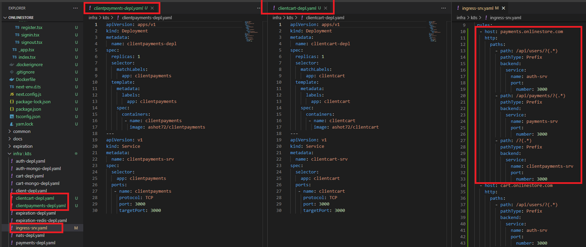

Microservices-Based Online Store with Microfrontends using Module Federation
Video: https://youtu.be/9Apf_SaA6nY
GitHub Repo: https://github.com/Ashot72/Microfrontends-Microservices-Based-Online-Store
Micro-frontend architecture is a design approach in which front-end app is decomposed into individual into individual, semi-independent 'microapps'
working loosely together. The micro-frontend concept is vaguely inspired by, and named after, microservices.
We already built Microservice based online store https://github.com/Ashot72/Microservices-based-Online-Store
Figure 1
In microservices-based online store the client part is composed of authentication, shopping cart, products and categories, and payments pages.
Figure 2
This is the Products page to list our all the different products we have for sale.
Figure 3
This is another page to show a Shopping Cart page, essentially all the items that a user intends to purchase.
Figure 4
We built it (Figure 1) using a classic approach where we have one single application deployed in a container.
Inside this project (client) we have a lot of code around implementing some kind of product listing page, a lot of code to implement something around a shopping cart page,
because all the code for our entire (client) application is in one single code base. We might refer to this as a monolithic single page application if we wanted to turn this into micro-front-end application.
We can look inside the application and try to identify each distinct and major feature inside of our app. We have Product Listing page and Shopping Cart page. After identifying each of these major features,
we can then split each of them into own separate code base. For example, we might have Product Listing page as a react single page application and code for Shopping Cart page inside of a totally separate
application, say, coded in Vue.js.
Figure 5
Inside of a micro front end approach kind of application as much as possible, we try to prevent direct communication between these two distinct projects.
Figure 6
Instead, our Product Listing application, maybe makes some kind of request to an API that manages all the data inside the user's shopping cart, and then whenever a user loads up the shopping cart
application to see their products that they have added to their cart, the shopping cart app would make a request to that same API and will get a listing of all the products that is in their cart.
You notice that we do not have any kind of direct communication between these two smaller applications.
Figure 7
Why would we use micro frontends, what benefit do we get to splitting these things up into separate apps. There is one very large benefit that we get, and that is that each of these applications can now be
thought of as separate independent app. There is no direct communication between them. That means we could assign development of Product Listing to, say, engineering team number one, and could
assign development of the Shopping Cart app to a totally separate engineering team. These can be two different engineering teams inside of our company, and they could decide to make radically different
decisions for implementing each of these projects. For example, the engineering team number one could decide to build this project using react and maybe engineering team number two could decide to implement
this using angular or something else.

Figure 8
Whenever you hear the term Integration, you need to think about how we are going to kind of assemble together our different micro frontends.
There are two different categories of integration. We have Built-Time integration, which is also known as Compile-Time, we have Run-Time integration also known as Client-Side.
You can read and see that it is a very small distinction there, but it runs out that distinction is rather important.
With Build-Time integration approach, we might have one team that is in charge of developing the Product List application. At some point time, they are going to finish up their project and
publish the NPM package to the NPM registry.
In Build-Time Integration an Engineering Team who developed Product List will publish the NPM package to the NPM Registry. Then the other team who needs it will install Products List as a dependency
using the same kind of NPM install command. Though it is relatively easy to install it but there is a downside. The project that makes use of Product List has to re-deployed every time Product List is updated.
Also, there is coupling between the project that uses it and Product List which is something that we do not really want to do in a micro frontends' architecture.
Once again, we might have an engineering team that develops the products list application. They would eventually decide that it is time to deploy the application at that point, rather than deploying their project
to, say, NPM or something like that. They would bundle up their project and deploy it to some static URL, something like, say, https://my-app.com/productlist.js. productlist.js JavaScript file has all the source code for
the products list application. Whenever a user navigates to my-app.com, we would load up the container app and at that point in time, the container app would then fetch that products list file and execute it.
In this case the app that uses it gets access to the source code of products list after the project that uses it has been loaded into the browser. The big upside is that we can independently deploy the product list
application at any time without having to redeploy the app that uses it. Another big upside is that we can easily have different live versions of the products list application. We might be doing some kind of AB testing
where we have two versions of the products list and it can be the app that uses it to decide which of those two versions to use. The downside to this approach is that the tooling and the setup for it is way, way more
complicated. In our app we will use Run-Time Integration and we are going to implement it using Webpack 5 Module Federation.
Now, we want to make use of micro frontends and Webpack 5 Module Federation in our Microservice based online store app.
Figure 9
Our client app (Figure 4) is a monolithic app. Suppose, now we have an engineering team that should be involved in the Shopping Cart development and another team to be busy with Payments module.
Figure 10
You can see that you can go through the products but you cannot Add to Cart. So, they decided that authentication module will be implemented in the Shopping Cart micro frontend.
Figure 11
In our cart, clientCart and clientPayments projects we have very similar next.config.js files where we specify webpack configs.
Figure 12
In these 3 config files we use Module Federation For Next.js https://www.npmjs.com/package/@module-federation/nextjs-mf package by means of which we should
form a single application. In other words, our micro frontends should talk to each other at runtime.
Figure 13
Let's look into the next.conig.js file of cart project. The name (name: 'client') should be unique, because it is used to distinguish between micro frontends.
The idea is that the micro frontend apps have outputs called exposes and inputs called entries. Exposes define what micro frontend app exposes to other apps.
It is not limited to just exposing the whole micro frontend app itself, it can also be just parts of it like functions, components, full-page contents, routing etc.
The only limitation is that it has to be compliable to JavaScript. Entries define what the micro frontend app wants to use from other micro frontend apps.
Figure 14
You can see that the client app exposes header ('./components/header.tsx') component which means that other micro frontends can use header from the client app.
Figure 15
The second entry is useRequest ('./hooks/use-request.tsx') hook (function) which will be used by other micro frontends.
Third one is ServerError component.

Figure 16
In the config file (Figure 13) we also defined remotes cart and payments as keys. The key value cart@http://cart.onlinestore.com/_next/static/chunks/remoteEntry.js
refers to the name of the Module Federation Plugin defined in the clientCart (Shopping Cart) app's next.config.js and URL where the clientCart app's remoteEntry.js is hosting.
Figure 17
clientCart's (Shopping Cart) remote entry path is http://cart.onlinestore.com/_next/static/chunks/remoteEntry.js
remoteEntry.js here allows the client app to dynamically load code from remote Shopping Cart server.
There is also the shared property (Figure 13) where we write all the dependencies that we want to reuse if possible. If there are different required versions of that
same dependency, all different required versions will be loaded as fallback. This is not always good, for example different react and react-dom versions do not
always play together. Additional singleton: true is there to prevent this fallback logic, and forcing to not load different versions afterwards.
Figure 18
Here I show exposes and remotes for each micro frontend.
Figure 19
We expose header from client and both Shopping Cart and Payments consume it.
Figure 20
This is the header defined inside the client project.
Figure 21
We import header as 'client/header' where client is the name specified in client's next.config.js (name: 'client') and header is the header entry exposed from it.
Figure 22
header in the Shopping Cart micro frontend (cart.onlinestore.com) exposed from the client (onlinestore.com).
Figure 23
Here cart is exposed from the Shopping Cart and consumed both in client and Payments micro frontends.
Figure 24
Cart is exposed from the Shopping Cart micro frontend (red) and consumed inside the client (green).
Next.js is used for server-side rendering of react application.
Figure 25
The module federation package we use is Client side only. This means we cannot use it for server-side rendering.
Figure 26
For server-side rendering https://app.privjs.com/buy/packageDetail?pkg=@module-federation/nextjs-ssr we should use @module-federation/nextjs-ssr package which is not free, so we implemented
only client-side module federation.
Figure 27
We first imported cart code from Shopping Cart. We specified { ssr: false } meaning client side. We will see what would happen if we do not specify it later on.
In this code on the server side (the red rectangle) we get cart data and pass it to imported <RemoteCart /> and on the client-side we just get props form Shopping Cart and pass it to <RemoteCart/>
Figure 28
I commented out our code and opened the existing comment. This time we do not have { ssr: false }.
Figure 29
If we click directly on 'Shopping Cart' link we will see the error as server-side module federation is not enabled.
Figure 30
On the server we see that it returns fake cart (Shopping Cart) module.
Figure 31
Now, if you click on Home then navigate to Shopping Cart then you will see the items as it is a client-side call.
Figure 32
If we enable module federation server-side rendering (which we did not as it costs some money) then it probably means that with the existing code (the green rectangle)
we can render it both on the client and server sides. No need to specify <RemoteCart /> and call await client.get('/api/cart').
Figure 33
As we already stated authentication is also implemented in Shopping Cart micro frontend and consumed by client and Payments micro frontends.
Figure 34
Regiter, Signin and Signout are consumed by Payments micro frontend.
Figure 35
We expose useRequest hook from client which is consumed by Shopping Cart micro frontends.
Figure 36
We consume userHook in Shopping Cart micro frontend to make api requests. We could consume it via module federation as we use it on the client side.
Figure 37
We use the exact same code build-clients.ts both in client and cart micro frontends and cannot share it like useRequest because we use it on the server-side.
Our Shopping Cart and Payments micro frontends are running inside different pods.
Figure 38
Windows hosts file is located in C:\Windows\System32\drivers\etc folder. We just have to add two lines both for cart.onlinestore.com and payments.onlinestore.com to run on 127.0.0.1.
Figure 39
Micro frontends running on 127.0.0.1.

Figure 40
We created 2 more deployments and added cart.onlinestore.com and payments.onlinestore.com in host section of ingress-srv.yaml file.
Figure 41
We also published cart and payments microservices on Docker hub.
Because of runtime integration, and the exposed code compiling to JavaScript via Module Federation, the type information from Typescript is lost. For that reason
we create a shared library and link to each micro frontend to enable type support. We do it via linking.
Figure 42
We created mfe-shared library and defined common interfaces. We run yarn build on that folder. Once it is successful, we will see dist folder and index.d.ts generated file.
Figure 43
We run yarn link command.
Figure 44
We navigate to our micro frontends projects and run yarn link mfe-shared command.
Figure 45
Now, you can import type from the shared library and have type support enabled.
Figure 46
In Payments micro frontend we specify module: {name: 'payments'} object property. We pass it to header component to render the respective links on the header
that Payments micro frontend needs.
Figure 47
You see that Payments micro frontend has only one link Payments as a team working on this module does not care about other links. So, when getting the header from remotes, we pass
name identifier to get the links we need on the header.
Figure 48
What if we comment out the line and do not pass the name. You see the error something went wrong and the reason inside the Chrome console.
Figure 49
The app did not break entirely because Header was wrapped inside react SafeComponent.
This means that a breaking change in one micro frontend can have an impact on another one so micro frontends should be agreed on some predefined contracts.
https://blog.mimacom.com/role-of-module-federation-in-micro-frontends/#:~:text=Exposes%20define%20what%20the%20micro,to%20be%20compilable%20to%20JavaScript.
Typescript
Safe component